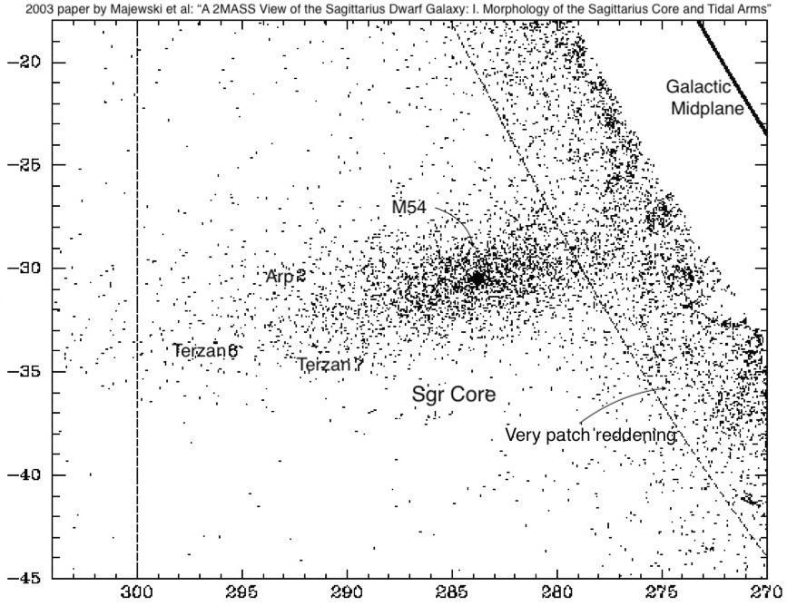
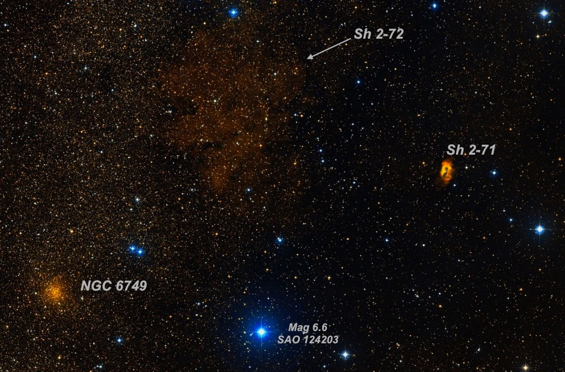
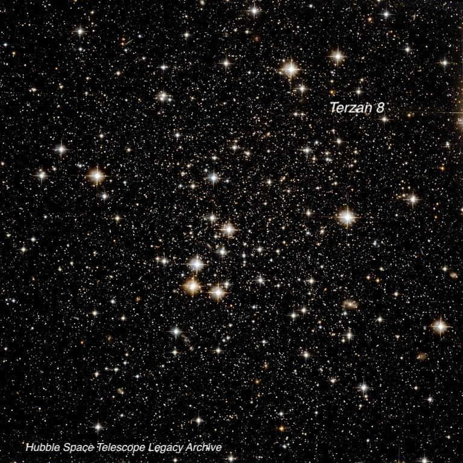

Terzan 7 and 8
- Name: Terzan 7 = ESO 397-14
- Position: 19h 17m 44s -34° 39' 28" (2000)
- Constellation: Sagittarius
- Size: 2.6'
- Magnitudes: V = 11.9, V_tip = 15.0
- Name: Terzan 8 = ESO 398-21
- Position: 19h 41m 44s -33° 59' 58" (2000)
- Size: 5.0'
- Magnitudes: V = 11.5, V_tip = 15.2
I'm grouping these two globular clusters together as they share a common origin -- our nearest neighbor, the Sagittarius dwarf spheroidal galaxy (Sgr dSph or SagDEG). The galaxy itself -- centered on M54 at a distance of 80,000 to 90,000 light years -- has long been in the slow process of being ripped to shreds and dissolved into the Milky Way. Still, the distended core region -- perhaps 15° in diameter -- was first recognized in 1994 during a spectroscopic survey of stars in the central bulge. You'd think such a nearby galaxy wouldn't have escaped detection until 27 years ago, but it lies on the opposite side of the galactic bulge about 20,000 light-years below the galactic plane. Starlight from its members have to cross the dust within 5 spiral arms to angle up towards us and are mixed in the light of countless Milky Way stars.
Besides M54, the central region contains globular clusters Terzan 7, Terzan 8 and Arp 2 as well as two known planetary nebulae Henize 2-436 and Wray 16-423. In an article in the upcoming October issue of Sky and Telescope, I cover all these objects, as well as several clusters (globular and open) and a planetary nebula in its two main tidal tails that wrap around the Milky Way. Hopefully you can check out the full article.

Terzan 7 is the brightest of the 11 globulars discovered by Agop Terzan in the 1960s on a red-sensitive plate. It lies at a distance of ~75,000 light-years and can be found about 4° northeast of showpiece globular NGC 6723. Terzan 7 is an oddball -- its age is an unusually young 8 billion light years. Sgr dSph has been orbiting the Milky Way for billions of years and perhaps a close passage at that time triggered this second-generation globular. The V_tip = 15.0 (brightest star) and V_Horizontal Branch = 17.9.
I've made several observations of both clusters since 1998 -- here's one of Terzan 7 with my 18" from 2010. As both of these globulars are at -34° declination, the visibility depends on a good southern horizon and conditions. Obviously, the southern hemisphere has a distinct advantage -- the clusters pass directly overhead from the latitude of Sydney, Australia!
"Easily picked up at 175x as a very faint, textured glow of ~1.5' diameter. Visible continuously with averted vision. A couple of 14th magnitude stars are at the east edge and one of 15th mag is at the west edge. The main glow was slightly irregular or mottled with a couple of stars sparkling on and off. Sometimes I had a strong impression of an E-W elongation, though this may have been due to the faint stars near the edges." Located 2' NW of an 11.6-mag star and 4.4' WSW of 10th mag HD 180444.

Terzan 8 is an ancient cluster, formed at the same time as the Milky Way globulars, though of low mass and concentration. It's situated about 3° south of the bright (and also loose) globular M55, last week's OOTW! The V_tip is mag 15.2 (uncertain). These notes are from my first observation with a 17.5" f/4.5 back in 1998.
"Initially Terzan 8 appeared to have a small bright core surrounded by a very low surface brightness halo ~1.5'-2' diameter (boundary difficult to trace) within a rich Milky Way field. After careful viewing, I noticed a couple of close mag 15 stars just southeast of center contributed to the impression of a small bright core and the background glow was otherwise unconcentrated. The cluster is surrounded by several mag 13 and fainter stars. More difficult to view than Terzan 7, which was also observed the same evening."

"Give it a go and let us know!
Good luck and great viewing!"